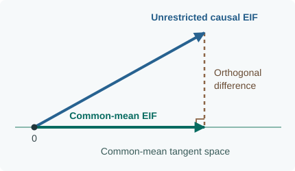

Can the four efficiency bounds be ordered?
For the same trial effect, knowing that internal and external controls have the same conditional mean can improve precision. To compare a hybrid trial with a randomized or externally controlled trial, we also need to know who is enrolled and which contrast each design estimates.
Four model spaces
Each region contains probability laws for one observation scheme. Let X denote baseline covariates, S trial membership, A treatment and Y the observed outcome. Inside the hybrid trial, the two control means can be set equal while keeping all three groups. Follow either branch to see what happens when a group is removed.
Unrestricted hybrid-randomized controlled trial (HCT)
- Treated
- Internal control
- External control
The three conditional outcome laws can vary independently. Both the randomized trial contrast and the precision-weighted hybrid contrast can be estimated.
Hybrid trial likelihood and targets
Write g = T, I or E for a treated, internal-control or external-control observation. Each group has conditional outcome density fg(y | x), with mean mg(x). Given covariates x, the known randomization probability is e(x) and the trial source probability is p(x).
ℳHCT,U = {P : fP(x, g, y) = fX(x) πg(x) fg(y | x)},(πT, πI, πE) = (pe, p(1 − e), 1 − p).
The covariate density, source probability and three outcome laws vary subject to the support and moment conditions. The T, I and E indices correspond to 1, (1,0) and 0 in the paper. Here 0 < q = Pr(S = 1) < 1, and 0 < e(x) < 1 on trial support. Write ER for expectation over the trial covariate density fR = pfX/q.
θ = ER[mT − mI],θ̃λ = ER[mT − λmI − (1 − λ)mE].
The precision rule sets the internal-control share λ from the law and sets λ = 1 where external controls are absent.
Common-mean hybrid trial
The same three groups remain. At each shared covariate profile, the internal and external controls have the same mean. Their variances and higher moments can differ.
Common-mean restriction and target
ℳHCT,trans = {P ∈ ℳHCT,U : mI(x) = mE(x)for PX-almost every x with 0 < p(x) < 1}.
This is the observed control-mean restriction under (A4). The hybrid target equals θ throughout this submodel. Equality of the two targets at one law can also arise when positive and negative discrepancies cancel across strata.
Remove external controls
Randomized controlled trial (RCT)
- Treated
- Internal control
Only trial participants remain. Their randomized contrast identifies the trial effect under the trial identification assumptions.
RCT likelihood and target
Observe (X, A, Y) with S = q = 1. The joint density of the covariates, observed group and outcome has the form
ℳRCT = {PR : fPR(x, g, y)= fR(x) πg(x) fg(y | x)},(πT, πI) = (e, 1 − e).
The trial covariate density and both outcome laws vary with fixed allocation e(x). The target is θ = ER[mT − mI]. Conditioning the hybrid law on S = 1 gives this experiment with a first-order variance bound of BR/nRCT for the retained participants.
Remove internal controls
Externally controlled single-arm trial (ECT)
- Treated
- External control
The treated trial population supplies the covariates for an external comparison. A causal interpretation requires its counterfactual control mean to agree with the external control mean at those covariates.
ECT likelihood, target and retained law
Observe (X, S, Y) with A = S. Write fg,E and mg,E for the conditional outcome density and mean in group g under the ECT law.
ℳECT = {PE : fPE(x, g, y)= fX,E(x) πg(x) fg,E(y | x)},(πT, πE) = (pE, 1 − pE).
The covariate density, source probability and two outcome laws vary, with 0 < qE < 1 and external support at all trial profiles. In the paper’s notation the observed target is θ̃E = EE[m1,E(X) − m0,E(X) | S = 1]. It compares the treated and external outcome means over the ECT trial covariate distribution.
Deleting internal-control records from an HCT changes the source probability, trial fraction and retained-trial covariate density. With ē = ER[e(X)], they become
pE = pe / (1 − p + pe),qE = qē / (1 − q + qē),fR,E = efR / ē.
Constant randomization preserves the trial covariate mix. With covariate-dependent allocation, profiles more likely to receive treatment receive more weight among the retained trial patients.
Why one bound can only decrease
Keep every hybrid-trial record and consider the same trial causal effect, θ, at a law where the two control means agree at each shared covariate value. An unrestricted perturbation can move either mean separately. In the common-mean model, the two means must move together.

The blue arrow is the trial-only efficient influence function (EIF), evaluated under the full hybrid sampling law. Projecting it onto the directions allowed by the common-mean restriction gives the green arrow. The squared length of the dashed segment is the reduction in the bound.
Read the projection in the paper’s notation
At a common-mean law P, write U for the unrestricted hybrid model and “trans” for its common-mean submodel. Their tangent spaces contain the allowable score directions. The diagram is a schematic view of the plane spanned by the two EIFs.
For the default cohort below, the same 300 hybrid records give a causal-effect variance bound of 0.030 if the control means can vary independently and 0.015 if their equality is imposed. The assumption halves the variance bound for this example.
Why do the two hybrid markers below tie when the means agree? The unrestricted hybrid marker follows the paper’s precision-weighted contrast. At a common-mean law its EIF equals the green arrow. The unrestricted EIF for the trial causal effect still follows the blue arrow. The two targets agree in value there, but moving the external mean alone changes only the borrowing target.
The same-law projection is developed in Supplementary Section S2.5. For efficiency gains from external controls under conditional mean exchangeability, see Li, Miao, Lu and Zhou, Biometrics.
Put the four bounds on one number line
Each marker shows B/N, the first-order variance bound for one study of its displayed size. Moving left means a smaller variance for that row’s target. The example uses a single covariate profile and Gaussian outcomes with unknown group means and variances.
How the markers are calculated
The study sizes correspond to expected group counts under independent sampling from each design’s mixture law. Trial randomization is known. In the hybrid trial the controls supply information JI = nI/vI and JE = nE/vE. The internal precision share is λ = JI/(JI + JE).
At equal means, both hybrid bounds are vT/nT + 1/(JI + JE). Each comparator uses the same treated contribution plus its control variance divided by the number of controls it enrolls. With retained groups, combining the two positive control information terms gives a smaller bound than either alone. With equal total enrollment, recruiting all controls from the less variable source can give the smallest bound.
When δ differs from zero, the unrestricted hybrid contrast is 1 + (1 − λ)δ. Write c = δλ(1 − λ). At the Gaussian law the additional variance from estimating the share is
The first two terms come from source membership and the last two from the control variances. The external contrast is 1 + δ. A causal interpretation of the ECT contrast requires the trial’s unobserved mean under control to equal the external mean at the same covariates. An ECT alone cannot check that assumption.